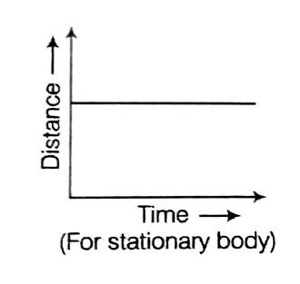
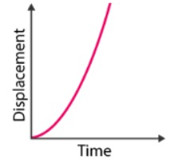
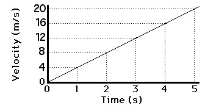
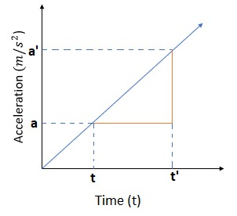
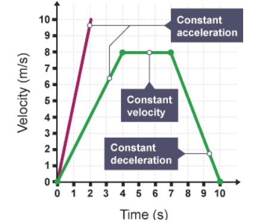
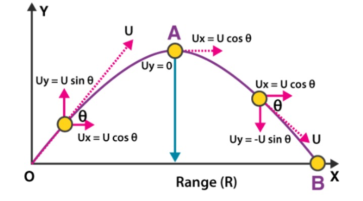

Kinematics is the branch of mechanics that describes the motion of objects without considering the forces that cause the motion.
Distance between two points is the length of actual path travelled by the particle. It is a scalar quantity. Unit : m(metre).
Displacement is a vector drawn from the initial position (A) to the final position (B) Unit : m(metre)
Velocity is the rate of change of position vector. Kinematics Unit : ms–1 (metre per second)
Acceleration is defined as the rate of change of velocity. It is denoted by ‘a’ and is measured in the units of m/s2
The average speed of an object can be defined as the total distance travelled by it in a particular interval of time. It can be calculated by dividing the total distance travelled by the total time taken. average speed (avg) = Total distance covered/ Total time taken
Average velocity is a vector quantity. Average velocity is defined as the change in position or displacement (∆x) divided by the time intervals (∆t) in which the displacement occurs.The average velocity can be positive or negative depending upon the sign of the displacement. The SI unit of average velocity is meters per second (m/s or ms-1)
The velocity of an object is its speed in a particular direction. Two cars travelling at the same speed but in opposite directions have different velocities. A velocity-time graph shows the speed and direction an object travels over a specific period of time. Velocity-time graphs are also called speed-time graphs. When an object is moving with a constant velocity, the line on the graph is horizontal. When the horizontal line is at zero velocity, the object is at rest. When an object is undergoing constant acceleration, the line on the graph is straight but sloped. Curved lines on velocity-time graphs also show changes in velocity, but not with a constant acceleration or deceleration. The diagram shows some typical lines on a velocity-time graph.
Slope of tangent to position time graph gives velocity. Slope of tangent to v−t curve gives acceleration. Area enclosed between v−t curve and time axis between an interval of time gives displacement. Slope of tangent to a−t curve gives rate of change of acceleration Area enclosed between a−t curve and time axis between an interval of time gives change in velocity
For constant acceleration, the following equations are used:
v = u + at
s = ut + ½at²
v² = u² + 2as
When a particle is thrown obliquely near the earth’s surface, it moves along a curved path under constant acceleration that is directed towards the centre of the earth (we assume that the particle remains close to the surface of the earth). The path of such a particle is called a projectile and the motion is called projectile motion
Total Time of Flight: Resultant displacement (s) = 0 in Vertical direction. Therefore, by using the Equation of motion:
gt2 = 2(uyt – sy) [Here,uy = u sin θ and sy = 0]
i.e. gt2 = 2t × u sin θ
1. Along the x-axis: uniform velocity, responsible for the horizontal (forward) motion of the particle.
2. Along y-axis: uniform acceleration, responsible for the vertical (downwards) motion of the particle
Solution:
Solution: Total time = 2u/g = 40/9.8 ≈ 4.08 s
Solution: v = 0, u = 20 m/s, t = 10s ⇒ a = -2 m/s², s = ut + ½at² = 200 - 100 = 100 m
Solution: At max height, v = 0 ⇒ v = u - gt ⇒ 0 = u - 10×5 ⇒ u = 50 m/s
Solution: u = 0, v = 40, t = 20 ⇒ s = ut + ½at² = 0 + ½ × 2 × 400 = 400 m